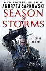
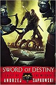
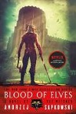
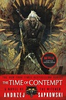
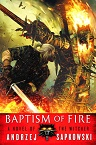
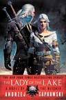
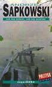

A fantasy set in a war-torn world with all kinds of people, even good people
"I forgot to thank you..."
"It's not you who should be doing the thanking, sir, but me. You saved my life, you suffered an injury in my defence. And me? What did I do? I bandaged a wounded man, who'd fainted away, and put him on my cart and didn't leave him to expire. It's an ordinary matter, Witcher, sir."
"It's not so ordinary, Yurga. I've been left...in similar situations...Like a dog..."
The merchant, lowering his head, said nothing.
"Well, what can I say, it's a base world," he finally muttered. "But that's no reason for us all to become despicable. What we need is kindness. My father taught me that and I teach it to my sons."---Sword of Destiny: Tales of the Witcher (Sapkowski, p. 334)
My Reading Progress
| The Witcher Books, by Andrzej Sapkowski | |||
|---|---|---|---|
| Book Title | Cover | Type | My Reading Progress |
| The Last Wish | Short story collection | Read | |
| Season of Storms |  | Novel | Not yet read |
| Sword of Destiny |  | Short Story Collection | Read |
| Blood of Elves |  | Novel | Not yet read |
| The Time of Contempt |  | Novel | Read |
| Baptism of Fire |  | Novel | Not yet read |
| The Tower of Swallows | Novel | Not yet read | |
| The Lady of the Lake |  | Novel | Not yet read |
| Something Ends, Something Begins |  | Short Story Collection | Not yet read |
Spring will return, on the road the rain will fall
Hearts will be warmed by the heat of the sun
It must be thus, for fire still smoulders in us all
An eternal fire, hope for each one.
---Sword of Destiny: Tales of the Witcher (Sapkowski, p. 177)